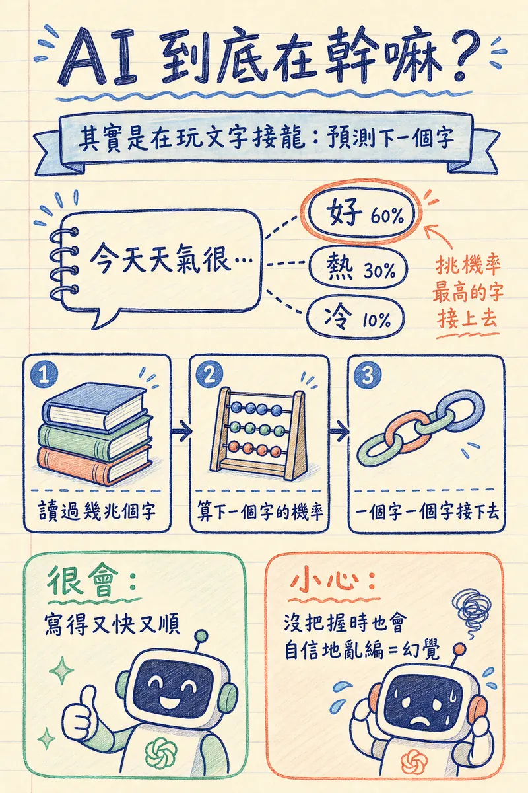

AI 為什麼突然爆發
AI 不是新東西。1950 年代就有人在研究了。但為什麼 2022 年底開始，突然所有人都在談 AI？
關鍵轉折是 ChatGPT 的發布（2022 年 11 月）。它是第一個讓一般人「感受到 AI 真的能做事」的產品。在那之前，AI 對多數人來說就是 Siri 聽不懂你說話、或是 Netflix 推薦你看過的電影。
ChatGPT 之所以不同，是因為背後的技術突破 — Transformer 架構（2017 年 Google 發表的論文《Attention Is All You Need》）。這個架構讓 AI 第一次能真正「理解」語言中的前後文關係，而不是逐字翻譯或套模板。
接下來的發展速度超乎所有人預期：
- 2023：GPT-4 發布，能力大幅躍升。Google 推出 Gemini 應戰。AI 生圖（Midjourney、DALL-E）品質突破
- 2024：AI 開始能「看」（圖片理解）、「聽」（語音對話）、「做」（Agent 操作電腦）。Claude、Gemini 迎頭趕上
- 2025：AI Agent 成為主流。Claude Code、OpenAI Codex 讓 AI 直接幫你寫程式、操作系統。AI 影片生成（Veo、Sora）逐步成熟
- 2026：推理模型（會先「想」再回答）成為各家標配；Agent 從工程師的玩具變成一般工作者的日常工具
現在的 AI 不再只是「聊天機器人」。它是一個能讀、能寫、能看圖、能生圖、能寫程式、能上網搜尋的多功能工具。這份講義會幫你搞懂它到底是怎麼運作的。
LLM — 大型語言模型
LLM 是 Large Language Model 的縮寫。ChatGPT、Claude、Gemini、Grok 背後都是 LLM。
它的運作原理其實很單純：預測下一個字。你給它「今天天氣很」，它會根據訓練資料判斷下一個字最可能是「好」、「熱」還是「冷」。整個對話就是一連串的「預測下一個字」串起來的。
這裡有個重要的觀念：LLM 不是在「理解」你的問題。它是在做統計預測 —「根據我讀過的幾兆個字，在這個上下文之後，最可能出現的字是什麼」。這解釋了為什麼它有時候回答得很漂亮，有時候又會一本正經地胡說八道。

訓練 vs 推理
LLM 有兩個階段：
- 訓練（Training）：花幾個月、用幾千張 GPU，讀完網路上幾乎所有的文字。這個過程燒掉幾千萬到幾億美金。你用不到這個階段。
- 推理（Inference）：你問它問題、它回答你的過程。每次回答都在消耗算力和 token。這是你日常使用的階段。
模型大小與能力
模型有大有小。大模型（各家的旗艦版本）能力強但慢且貴；小模型（名稱常帶 mini、Flash、Haiku 等字樣）快又便宜但能力有限。免費版通常用的是中小型模型。
一般日常使用，中型模型就很夠用了。不用追最大最貴的。
推理模型 — 會先想再答的 AI
2025 年起，各家主流模型都多了一種「思考模式」（介面上常標示 Thinking、思考或推理）。差別在於：一般模式讀完你的問題就直接生成答案；思考模式會先在內部寫一段草稿推理 — 拆解問題、檢查自己的邏輯、排除錯誤選項 — 想完才給你最終答案。
這帶來明顯的能力差異：數學計算、統計判讀、多步驟邏輯、複雜的分析比較，思考模式的錯誤率大幅下降。代價是更慢、更耗額度。所以重點不是「永遠開著」，而是知道何時開、何時不用：
| 適合開思考模式 | 不需要開 |
|---|---|
| 判讀論文的統計方法是否合適 | 翻譯、潤稿、改語氣 |
| 比較多篇文獻的矛盾結論 | 格式轉換（文字轉表格） |
| 多條件的計算與排程問題 | 快問快答、名詞解釋 |
Prompt — 提示詞
Prompt 就是你輸入給 AI 的文字指令。它是你和 AI 溝通的唯一方式，也是決定 AI 輸出品質的最關鍵因素。
同一個 AI 模型，好的 Prompt 和差的 Prompt 得到的結果可以差十倍。這就是為什麼「Prompt Engineering（提示詞工程）」會成為一門專門的技能。
好 Prompt 的四個要素
你是一位感染科醫師，正在為護理師做教育訓練…
讓 AI 知道用什麼專業水準和語氣來回答
請整理這篇論文的三個主要發現，每個用 2-3 句話…
明確告訴 AI 要做什麼、做多少
用表格呈現，欄位包含：藥物名稱、劑量、適應症…
指定你想要的呈現方式，省去來回修改
不要使用 2020 年以前的參考文獻，篇幅 500 字以內…
設定邊界，避免 AI 發散
常見的 Prompt 錯誤
| 差的 Prompt | 好的 Prompt | 為什麼好 |
|---|---|---|
| 幫我寫衛教 | 幫我寫一份給糖尿病患者的飲食衛教單張，用國中生能懂的語言，A4 單面，含 3 個重點 | 指定對象、語言水準、篇幅、結構 |
| 翻譯這篇論文 | 翻譯這篇論文的 Abstract 和 Conclusion，保留專業術語的英文原文並加上中文翻譯 | 指定翻譯範圍和術語處理方式 |
| 這個藥怎麼用 | Metformin 在 eGFR 30-45 的患者中，目前指引建議的劑量調整方式？請引用 KDIGO 2024 | 具體藥物、具體情境、指定參考來源 |
記住一個原則：你給 AI 的資訊越多、越具體，AI 的輸出就越好。不要怕 Prompt 太長 — 長而精確永遠比短而模糊好。
Token — 代幣
Token 是 AI 處理文字的最小單位。不是一個字等於一個 token — 實際的對應關係比較複雜：
- 英文常見單字大約 1 個 token（如 "hello"），長的可能 2-3 個
- 一個中文字大約 1-2 個 token
- 標點符號、空格也算 token
為什麼要知道 token？因為 token 決定兩件事：
- 費用：付費使用 API 時，按 token 數量計費。輸出通常比輸入貴 3-5 倍。
- 上下文視窗（Context Window）：AI 一次能「記住」的 token 總量。像是 AI 的短期記憶容量。超過上限，它就會「忘記」對話開頭講過的事情。目前主流模型在 12 萬到 100 萬 token。
多模態（Multimodal）
早期的 AI 只能處理文字。現在的主流模型是「多模態」的，同時能處理多種資料：
- 文字：閱讀、寫作、翻譯、摘要
- 圖片：看圖回答問題、描述圖片內容、生成圖片
- 語音：聽語音訊息、用語音對話（如 ChatGPT 語音模式）
- 影片：分析影片內容（部分模型）、生成影片（Veo、Sora）
- 文件：讀取 PDF、Word、Excel（上傳後分析）
這對醫療人員很實用。例如：
- 把英文論文 PDF 丟給 AI，請它用中文整理重點
- 拍一張藥品外觀照片，問 AI 這是什麼藥
- 把表格截圖丟給 AI，請它轉成 Excel 格式
- 用語音邊走邊跟 AI 討論病例
Hallucination — 幻覺
這是目前 AI 最大、最危險的問題，尤其在醫療領域。
AI 會「幻覺」的原因回到它的運作原理 — 它是在做「最可能的下一個字」的預測。當訓練資料中沒有足夠資訊時，它不會說「我不知道」，而是會生成一個統計上看起來合理的答案。
幻覺的危險在於它很難辨認。AI 不會用不確定的語氣，它會用跟正確答案完全一樣的自信語氣說出錯誤內容。例如：
- 引用一篇根本不存在的論文（連作者、期刊、年份都編得很像）
- 描述一個不存在的藥物交互作用
- 給出一個看似合理但完全錯誤的劑量
- 編造一個不存在的臨床指引
⚠️ 醫療人員必須記住的一條規則
永遠不要盲信 AI 的輸出。特別是涉及藥物、劑量、診斷、治療方案的內容，一定要用可靠來源（UpToDate、PubMed、藥品仿單）交叉驗證。AI 是輔助工具，不是決策依據。
好消息是，新一代模型的幻覺率已經大幅降低。而且有一個技術叫做 RAG（下一節），專門用來減少幻覺。
RAG — 檢索增強生成
RAG 是 Retrieval-Augmented Generation 的縮寫。概念很簡單：讓 AI 先查資料，再回答問題。
普通的 AI 回答問題時，只能靠訓練階段學到的知識（就像憑記憶回答）。RAG 的做法是：你先提供一批資料（例如醫院的用藥指引、衛教手冊、SOP），AI 在回答前會先去這批資料裡搜尋相關內容，然後根據找到的內容來生成回答。
這帶來兩個好處：
- 大幅減少幻覺 — 回答是基於你提供的真實資料，不是 AI 自己編的
- 可以使用私有資料 — AI 的訓練資料不會包含你們醫院的內部文件，但 RAG 可以讓 AI 讀取並回答
日常使用中，RAG 最簡單的形式就是：把文件上傳給 AI，然後針對文件內容提問。ChatGPT 和 Claude 都支援上傳 PDF、Word 檔案。這就是最基本的 RAG。
進階的 RAG 可以建立完整的知識庫（整個科室的 SOP + 衛教文件 + 用藥指引），讓 AI 隨時查詢。不過這需要技術設定，不在入門範圍。
API — 應用程式介面
API 是 Application Programming Interface 的縮寫。簡單說，它是程式跟程式之間溝通的標準介面。
你平常用的 ChatGPT 網頁或 App，是給「人」用的介面。API 是給「程式」用的介面 — 你的程式送出一段文字，AI 回傳回答，全部在背景完成。
為什麼醫療人員需要知道 API？
你不需要自己寫程式呼叫 API。但知道 API 存在，可以幫你理解很多事情：
- 為什麼有些 AI 應用免費（用免費模型的 API），有些要收費
- 為什麼某些 AI 功能可以嵌入 HIS 或 EMR — 因為透過 API 串接
- 為什麼 IT 部門說「要接 AI」需要評估成本 — 因為 API 按 token 計費
- 為什麼同一功能在不同平台品質不同 — 背後可能呼叫不同模型的 API
Agent — AI 代理人
這是 2025 年最重要的 AI 概念。
普通的 AI（ChatGPT 對話模式）就像一個只有嘴巴的顧問 — 你問它問題，它回答你，但它不能「做」任何事。
Agent 不同。它有「手」。
Agent = AI 模型 + 工具使用能力 + 自主規劃能力。它可以：
- 使用工具：上網搜尋、讀寫檔案、執行程式、操作軟體
- 拆解任務：把複雜任務拆成多個步驟，依序執行
- 自我修正：發現某步驟失敗了，自動嘗試其他方法
- 持續工作：不需要你一步一步指揮，給它目標就能做到完
具體例子：
- 「幫我把這 10 篇論文的結論整理成比較表」→ Agent 會依序讀取每篇 PDF、提取結論、整理成表格、存成 Excel
- 「幫我做一個病人衛教的網頁」→ Agent 會規劃架構、寫程式碼、測試、修正錯誤，最後給你一個可運作的網頁
目前最知名的 Agent 工具：Claude Code（Anthropic）、Codex（OpenAI）、Antigravity 等。這是 Part 7 的主題。
Harness — 決定 Agent 好不好用的隱形工程
Harness（原意是馬具、安全吊帶）是 2026 年 AI 圈的熱門詞，指包在 AI 模型外面的那層工程：它能用哪些工具、看得到哪些資料、產出要經過什麼驗證、哪些高風險動作必須先停下來問人。
這解釋了一個常見疑惑：為什麼感覺是同一顆模型，在聊天網頁、在 Agent 工具、在某個內嵌系統裡表現天差地遠 — 因為 AI 產品的好壞，一半來自模型本身，另一半來自 harness 的設計。挑 AI 工具時，別只看「用的是哪個模型」，也要看它讓 AI 在什麼制度下工作。
順帶認識一個會越來越常見的縮寫：MCP（Model Context Protocol）— 讓 AI 接上各種外部工具與資料庫的通用接頭標準，可以想成「AI 界的 USB-C」，各大 AI 公司都已採用。看到產品宣稱「支援 MCP」，意思就是它能讓 AI 外接更多工具。
主流 AI 工具比較
市面上的 AI 工具很多，但醫療人員只需要認識這四個主流選項：
📅 工具資訊更新於 2026 年 7 月 — 各家模型與免費額度變動頻繁，使用前以官方公告為準。
| 工具 | 最強項 | 弱項 | 免費版 | 醫療適用場景 |
|---|---|---|---|---|
| ChatGPT | 生圖、通才、插件生態系 | 長文偶爾遺漏 | 較小模型，每日上限 | 入門首選、衛教配圖 |
| Claude | 長文分析、寫作品質、程式 | 不能生圖 | 中型模型，每日上限 | 論文整理、報告撰寫 |
| Gemini | Google 整合、搜尋 | 中文寫作略遜 | 額度較多 | 需要最新資訊的任務 |
| Grok | 生圖（幾乎無審查） | 中文較弱 | 需 X 帳號 | 創意生圖 |
建議
- 入門起手：用 ChatGPT。最通用、介面直覺、中文好、能生圖。
- 論文/長文件：用 Claude。長文分析能力最強，寫作品質最好。
- 省錢日常：用 Gemini。免費額度最大方。
- 不要一次全學：先把一個工具用熟，再視需求探索其他的。
醫療應用場景
AI 在醫療領域的應用已經超越了「聊天」的範疇。以下是目前實際可用的場景：
文書工作
- 病歷摘要：濃縮冗長的入院病摘（注意：不要把真實病人資料貼進公開 AI 工具）
- 轉介信/出院摘要：給 AI 重點，讓它擴寫成正式格式
- 會議紀錄：語音轉文字 + 重點整理
- AI 跟診紀錄（Ambient AI Scribe）：AI 在診間「旁聽」醫病對話，自動生成病歷草稿，醫師審核後才簽入 — 美國退伍軍人醫療體系 2026 年起全面部署，實測每天省下 1-2 小時文書時間。台灣使用需注意錄音的知情同意與院內規範（入門版的語音轉文字見番外篇）
- 行政文書：計畫書、經費申請、成果報告的初稿
學術研究
- 文獻搜尋：描述研究問題，讓 AI 建議搜尋策略和關鍵字
- 論文閱讀：上傳 PDF，請 AI 整理方法、結果、限制（注意驗證！）
- 統計分析：AI 可以建議合適的統計方法、寫 R 或 SPSS 語法
- 論文寫作：潤稿、改善英文文法、建議更精確的學術用語
衛教與溝通
- 衛教單張：生成不同語言水準的衛教內容
- 衛教圖片：AI 生成插圖、infographic（Part 4 會詳細講）
- 短影片腳本：社群媒體衛教影片的腳本（Part 5 會詳細講）
- 多語翻譯：翻譯成外籍看護或病人能懂的語言
教學
- 教案設計：設計教學活動、出考題、製作評量工具
- 模擬病人：讓 AI 扮演病人，練習問診技巧
- 簡報製作：生成大綱、配圖、講稿
倫理與紅線
AI 是強大的工具，但在醫療場域使用時有明確的紅線不能踩。
✕ 絕對不可以
- 病人資料貼進 AI — 公開 AI 服務會將輸入用於改善。病人姓名、病歷號、診斷，一律不能貼
- AI 輸出直接當醫療決策 — AI 不是醫師，建議沒有經過臨床驗證
- 偽造醫學影像 — 用 AI 生成假的 X 光、MRI、病理切片
- 未標註 AI 用於學術 — 學術期刊要求揭露，未標註可能構成不誠實
✓ 安全的使用方式
- 去識別化後使用 — 移除可辨識資訊後，可用 AI 協助分析
- 輔助文書工作 — 用 AI 生成初稿，自己審閱修改後使用
- 學習與教學 — 解釋概念、出題、製作教材
- 視覺內容創作 — 衛教插圖、簡報配圖、社群圖卡
- 標註 AI 使用 — 在學術發表中清楚說明
簡單判斷標準：AI 生成的內容在到達病人或公眾之前，是否經過了一位有專業資格的人類的審查？如果「是」，通常就是安全的使用方式。